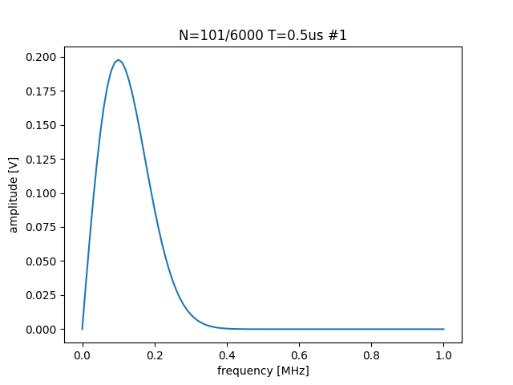
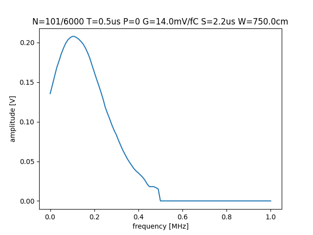
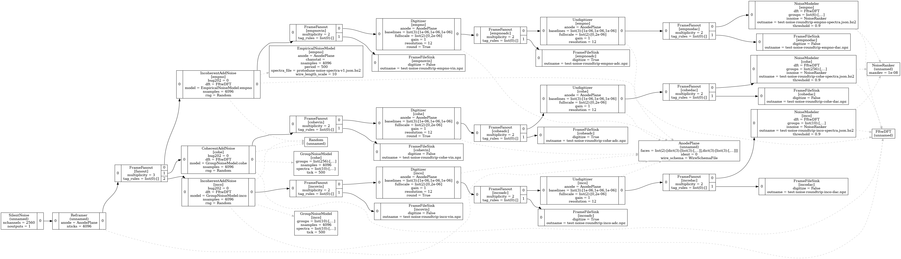

WCT Noise Modeling
(top) (pkg)
Table of Contents
1. Overview
WCT provides support for “noise” in various sub-packages:
WireCellUtil/Spectrum.hprovides low level functions:rayleigh(),hermitian_mirror(),interp(),extrap(),alias(),resamples().WireCellAux/NoiseTools.hprovides aCollectorclass to form mean spectra of various flavors from noise-rich waveforms andGeneratorto produce waveforms given a \(\sigma_k\) spectrum.WireCellSigProc/NoiseModeler.hprovides a flow graph node using aCollectorintended to run on data rich in noise, collect mean spectra and convert the result to WCT noise spectra and output them to file. It makes use of aNoiseRankerto determine if any given waveform appears to be rich in noise. Also provided is theUndigitizercomponent which is effectively applies the inverse transform ofDigitizerfromgenand prepares voltage-level waves for input to theNoiseModeler.WireCellGen/AddNoise.hprovide flow graph nodes to add noise coherently by groups of channels and incoherently on a per-channel basis. I relies on one or more “noise models” to provide spectra. TheGroupNoiseModelprovides two interfaces, one for coherent and another for incoherent and both work on a channel-group basis by consuming WCT noise spectra and a WCT channel-groups data from file or configuration. TheEmpiricalNoiseModelconsumes WCT noise spectra and also supports runtime change in electronics shaping and gain as well as wire length binning.- Various Jsonnet job config and
wire-cell-pythoncanned plots.
2. WCT Noise Spectra
WCT noise spectra defines a dataset describing mean spectral amplitudes and related metadata. They are provided to WCT C++ code as objects following a schema defined here. The datasets are provided via WCT configuration mechanism either directly as Jsonnet configuration data or by naming stand-alone data files (usually as compressed JSON but Jsonnet may also be provided).
WCT noise spectra are in the form of an array of spectrum objects. Each spectrum object follows a schema describing what attributes it must or may have. The attributes are categorized as required, optional or undefined. A spectrum object must contain all required attributes. A consumer of a WCT noise file must ignore undefined attributes. An optional attribute is one that is required for some consumers and undefined for others. Consumers of optional attributes may provide default values for use if the attribute is unspecified.
2.1. Required attributes
A WCT spectral object must provide these attributes:
nsamples- an integer number providing the size of (number of contiguous time series samples taken from) the waveforms used to form the mean spectral amplitude. The
nsamplesmust not count any zero padding that may have been applied to a waveform prior to forming the waveform contribution to the mean spectrum (ie, prior to applying the DFT). Thensamplesvalue is distinct from the size of thefreqsandampsarrays. If usingNoiseTools::Collectorthe value fornsamplesis provided by the.nticks()method. period- a floating-point number providing the original sample period (inverse of sampling frequency) of the waveform expressed in the WCT system of units for [time]. (eg,
0.5*usfor MicroBooNE). Note,periodis not necessarily related to the values provided by thefreqsarray. freqs- an array of floating-point numbers providing frequency values expressed in the WCT system of units for [frequency]. Note, WCT’s base unit for [frequency] is not 1.0 Hz. The size of this array must be equal to the size of the
ampsarray and an element offreqsmust provide the frequency at which the corresponding element of theampsarray was sampled. Thefreqsarray may represent an irregular sampling and may be unordered. It should include samples at or near the zero and Nyquist frequencies. In particular it need not be a regular frequency sampling of1/periodnor extend beyond the Nyquist frequency. amps- an array of floating-point numbers providing an estimate of a mean spectral amplitude in units of [voltage] in the WCT system of units. Note that here “amps” an abbreviation of “amplitude” and not “amperage”. The value of an element of
ampsmay be derived from some sub-sampling or interpolation of an original distribution of DFT coefficients. That is, an element ofampsis the an average \(\langle|X_k|\rangle,\ k\in [0,N^{(fft)}-1]\) with \(N^{(fft)} \ge\)nsamples, over some number of waveforms of sizensamples. The inequality is typically due to zero-padding of the waveform prior to taking the DFT. Note: in preparingampsthe user is recommended to provide a number of waveforms approximately equal tonsamplesin order to co-optimize spectral resolution and statistical stability. User is also recommended to utilizeNoiseTools::Collectorfor low-level noise modeling code or execute a job usingNoiseModelerfor a high-level development.
2.2. Optional attributes required by EmpiricalNoiseModel
The EmpiricalNoiseModel component requires these optional attributes:
const- a floating point number expressed in the same units as
ampsand which provides an estimate of the mean white noise, and thus constant, spectral amplitude \(\langle|X_w|\rangle\). gain- a floating-point number giving the electronics gain from which the voltage waveforms originated. The value must be in WCT system of units for [voltage]/[charge] (eg
14.0*wc.mV/wc.fCas expressed in WCT Jsonnet configuration). Note, this is not a unit-less, relative gain. shaping- a floating-point number giving the electronics shaping time from which the waveforms originated. The value must be expressed in WCT units for [time].
plane- an integer number giving the plane index counting from zero and in the direction of nominal drift. Ie, U=0, V=1, W=2. This value must indicate the plane in which a channel resides in order for the spectra to be applicable.
wirelen- a floating-point number giving a wire length expressed in the WCT system of units for [length]. This value should be representative of (eg, binned over) wires for which the associated spectrum applies.
2.3. Optional attributes required by GroupNoiseModel
The GroupNoiseModel provides a model interface for both coherent and incoherent noise where spectra are grouped in some manner. It requires this optional attribute:
group- an integer identifying an abstract group to which channels may be associated. The association to channels may be provided by a WCT channel groups array. The use of
groupIDas this attribute name is deprecated.
3. WCT channel groups
The GroupNoiseModel and potentially other components require information on how to collect channels into distinct groups. The user provides this information in the form of WCT channel-groups data structures. These are in the form of an array of WCT channel-group objects, each of which has these required attributes:
group- an integer identifying a group. Over one channel-groups set, the
groupvalues may be discontinuous and may be unordered. Eachgroupvalue must be unique in the set. channels- an array of integer values providing the channel ID numbers to associate as a group. The channel IDs are as used in the WCT wire object configuration provided and described elsewhere.
4. Providing the above data
WCT noise spectra and channel group datasets are sometimes highly structured, even algorithmically generated, and sometimes unstructured and voluminous such as when they are derived from some external analysis.
To accomodate the user, developers of WCT C++ IConfigurable components should define a configuration parameter which may accept these datasets in two forms: (1) a string giving the name of some file holding the dataset or (2) an object or array that is directly provided as configuration data.
When the user provides a file, it may be either in JSON or Jsonnet form and either may be compressed. A user wanting to provide datasets as Jsonnet is suggested to look at test-noise-roundtrip.jsonnet and the other test-noise-*.jsonnet which it imports for examples.
Developers of WCT components can provide the user this flexibility with just a few additional lines in the configure() method of their C++ component. For example, to retrieve a channel group dataset:
#include "WireCellUtil/Persist.h" void MyClass::configure(const WireCell::Configuration& cfg) { auto jgroups = cfg["groups"]; if (jgroups.isString()) { jgroups = Persist::load(map_file); } // ... code using jgroups ... }
5. Round-trip Validation
The WCT noise code supports both modeling and simulating noise. Each is effectively the inverses of the other and so we may check that we get out what we put in. The “round-trip” check consists of these steps:
- A set of fictional noise spectra and channel groups are defined.
- We interpret the spectra as both coherent and incoherent.
- Each interpretation has a
GroupedNoiseModeland for each a noise frame is generated. - Each of these are digitized to ADC and result saved to file.
- Each ADC-frame continues and an
Undigitizerrestores voltage level. - Each V-frame is analyzed by a
NoiseModeler- Traces are judged by a
NoiseRanker - Survivors added to a
NoiseCollector - Finally, the grouped spectra are saved to a WCT noise spectra file.
- Traces are judged by a
- Plots are made .
5.1. Input spectra
The input spectra can be viewed with:
wirecell-sigproc plot-noise-spectra \ gen/test/test-noise-spectra.jsonnet orig.pdf
This will consume spectra which are generated by the Jsonnet file which produces a function with the following signature:
function(ngrps=10, nsamples=4096, nsave=64, period=0.5*wc.us, fpeak=0.1, rms=1*wc.mV)
It’s arguments are as listed:
ngrps- number of spectral groups to generate. The spectrum from a group will have a fraction
grpnum/ngrpsof the givenrms. nsamples- number of waveform time samples (number of “ticks”) from which the spectrum is assumed to have originated.
nsave- number of sub-smampled points to produce. This may be chosen equal to
nsampleshowever typical analyses result in far higher frequency resolution than statistical stability (ie,nsamples\(\gg\)nwaves) and thus chosing a smallnsaveemulates the common case of sub-sampling the result. period- the waveform sampling period (“tick”) from which the spectrum is assumed to have originated. This must be expressed as a [time] value in the WCT system-of-units.
peak- the location of the spectral peak expressed as a fraction of the Nyquist frequency (
0.5/period). rms- the expected RMS from waveforms generated from the returned mean spectral amplitude. This must be expressed as a [voltage] value in the WCT system-of-units.
See below for guidance on how to provide meaningful values for peak and rms.
5.2. Model details
The user requires some understanding of the noise spectral model that is used in this test in order to provide proper values. The spectral shape in the frequency domain is chosen to follow the Rayleigh distribution, \[R(x;\sigma) = \frac{x}{\sigma^2}e^{-x^2/(2\sigma^2)},\ x \ge 0\] We will include a constant scaling term so that the full spectral model function is: \[\langle|X_k|\rangle \triangleq S\cdot R_k,\] where we discretize \(R_k \triangleq R(f_k,\sigma_s)\) and define the parameter \(\sigma_s = \mathtt{peak} * F_{Nyquist}\). The \(\sigma_s\) may be chosen to place the peak near that of some real world noise spectrum and the constant scaling term \(S\) may be chosen so that waveforms generated from this mean spectrum will have some (mean) RMS near that of some set of real world noise waveforms.
The choice of the Rayleigh distribution for the spectral shape is motivated by the fact it roughly reproduces the shapes of real-world noise spectra. It is otherwise an ad-hoc choice and not motivated by any physics. In particular, the choice does not relate to the coincidental but important fact that each spectral bin \(k\) is also distributed by a Rayleigh distribution. Its distribution is governed by Rayleigh parameter \(\sigma_k,\ k\in[0,N-1]\) where \(N\) is given by nsamples.
The fact that the spectral bin values are Rayleigh-distributed provides a very practical tool which allows relating the model parameters to the (mean) RMS in time. This is possible because the first two “raw” moments of the Rayleigh distribution are related through the \(\sigma_k\) parameter as:
\[\langle|X_k|\rangle = \sqrt{\frac{\pi}{2}}\sigma_k\]
and
\[\langle|X_k|^2\rangle = 2\sigma_k^2.\]
Solving gives:
\[\langle|X_k|\rangle^2 = \frac{\pi}{4} \langle|X_k|^2\rangle,\ k\in[0,N-1].\]
We may define RMS on a per-waveform basis in the time domain and relate that to a frequency-domain representation using Perseval/Rayleigh energy theorem:
\[\sigma_{rms}^2 = \sum_k|x_k|^2/N = E/N = \sum_k|X_k|^2/N^2.\]
And we may form an average \(\langle\cdot\rangle\) over many waveforms,
\[\langle \sigma_{rms}^2 \rangle = \sum_k \langle |X_k|^2 \rangle / N^2 = \sum_k \frac{4}{\pi} \langle |X_k| \rangle^2/N^2\]
Putting the above all together, we are left to choose \(\sigma_s\) and \(S\) so that the above sum gives desired \(\langle\sigma_{rms}^2\rangle\). We expect to select \(\sigma_s\) so that the model peak will be approximately the same as the peak of some real-world noise spectrum. Taking \(\sigma_s\) as given, we are left to solve for \(S\):
\[S^2 = \frac{\pi N^2 \langle\sigma_{rms}^2\rangle}{4 \sum_k R_k^2} \]
Thus the rms parameter is identified as providing the desired value of the \(\sqrt{\langle\sigma_{rms}^2\rangle}\). An example with \(N=6000,\ \sigma_{rms}=1\ \mathrm{mV},\ \mathtt{peak}=0.1,\ T=0.5\ \mu\mathrm{s}\) and saving only 100 subsampled points is shown:

See test-noise-roundtrip.sh for exact command. The commands to reproduce such plots are described next.
5.3. Visualize the model
The above plot was made with a command like the following:
wirecell-sigproc plot-noise-spectra \ -A ngrps=1 \ -A nsamples=6000 \ -A nsave=100 \ gen/test/test-noise-spectra.jsonnet \ specta.pdf
As illustrated, novel values for parameters of the model may be set from the command line. This same Jsonnet file may be used from WCT job configuration. This provides an easy way to define noise where the Rayliegh shape is sufficient to model a desired noise spectrum.
For comparison, an example of a spectrum modeling real-world noise from the ProtoDUNE-SP (PDSP) detector is given:

The noise in PDSP is about 4 ADC RMS and its 12 bit ADC sees voltage in the range of 200 to 1600 mV and so expects about 1.3 mV RMS of noise measured in voltage input to the ADC. As a reminder, the simple model above has rms = 1 mV and achieves a smilar peak of 200 mV in amplitude for similar peak and same nsamples.
5.4. Performing the round-trip
A main configuration file for wire-cell is provided that uses the same test-noise-spectra.jsonnet described above to provide the input to the round-trip. The round-trip job can be exercised with default parameters like:
$ wire-cell -c gen/test/test-noise-roundtrip.jsonnet
$ ls -l test-noise-roundtrip-*{npz,json.bz2}
The job flow graph is:

It produces output that represents a cross product of \((inco,cohe) \otimes (adc,dac)\) where
- inco
- incoherent grouped noise (3 groups)
- cohe
- coherent grouped noise (10 groups)
- adc
- the simulated ADC
- dac
- the ADC rescaled back to voltage level
Each cross produces a .npz file and each noise type results in a
.json.bz2 file of output spectra. These too can be visualized
wirecell-sigproc plot-noise-spectra \ test-noise-roundtrip-inco-spectra.json.bz2 \ inco-spectra.pdf wirecell-sigproc plot-noise-spectra \ test-noise-roundtrip-cohe-spectra.json.bz2 \ cohe-spectra.pdf
Or, run it all together as:
aux/test/test-noise-roundtrip.sh